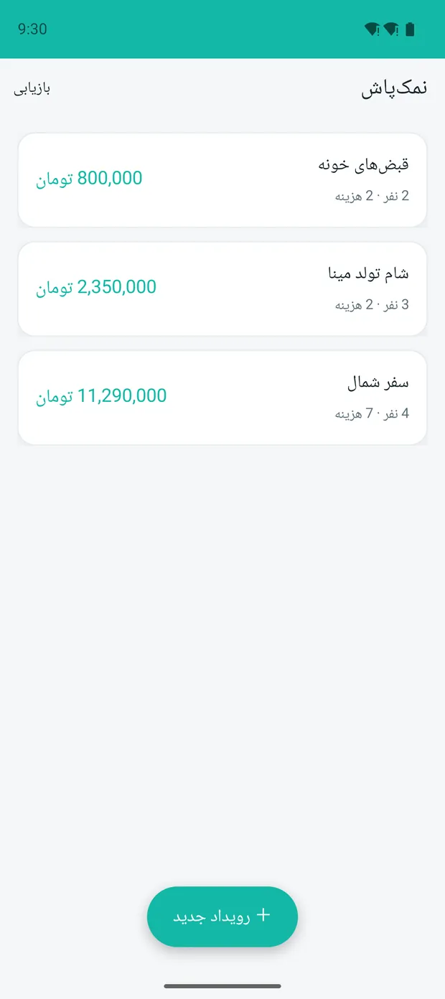
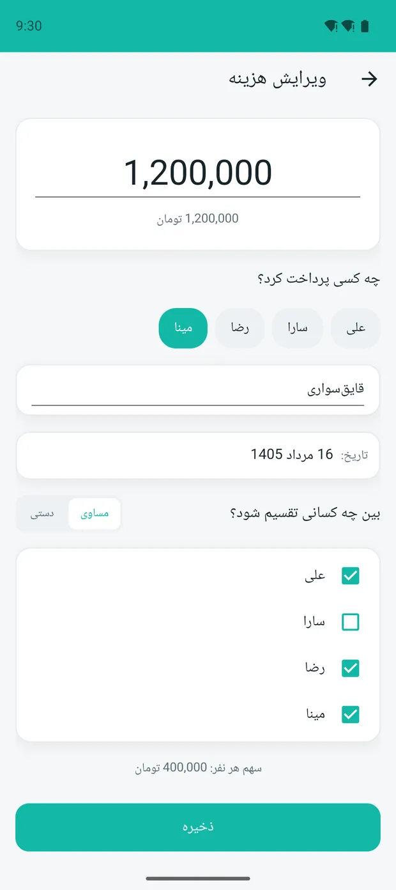
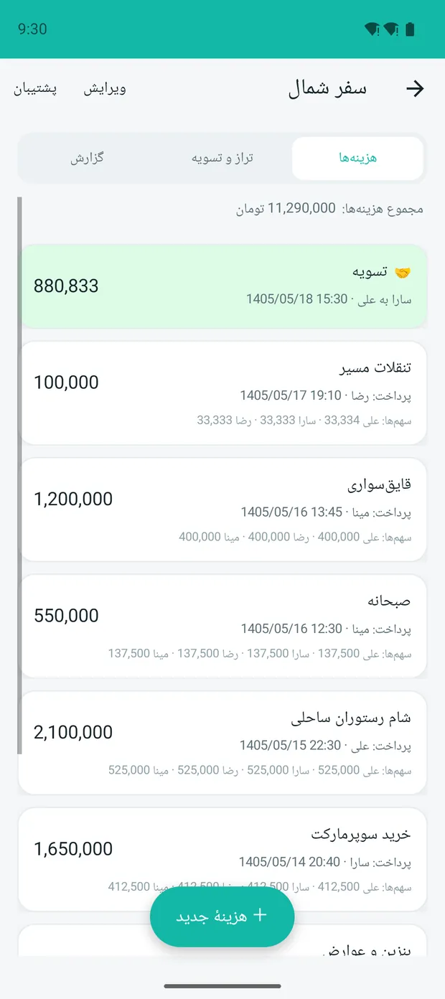
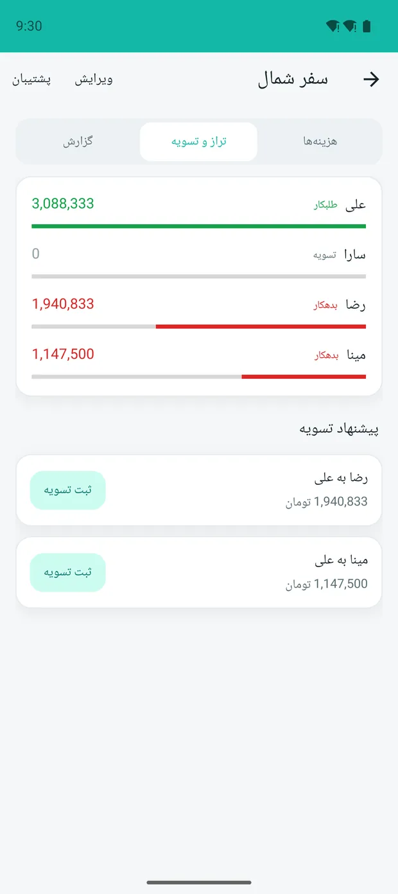

01از 5 مرحله
سی ثانیه تا شروع
اسم رویداد، اسم آدمها، تمام. نه ثبتنام، نه رمز، نه اینترنت. هر چیزی که وارد میکنی روی همین گوشی میماند و جای دیگری نمیرود.
02از 5 مرحله
هزینه را همان لحظه ثبت کن
کی داد، چقدر بود، سهم چه کسانی. اگر یک نفر سر آن وعده نبود، تیکش را بردار — سهمش صفر نمیشود، اصلاً پای آن هزینه نمیآید.
03از 5 مرحله
یک تومان هم گم نمیشود
100,000 بین سه نفر بخش نمیشود. خیلی برنامهها آن یک تومان اضافه را میاندازند دور؛ نمکپاش میدهدش به نفر اول — 33,334 و 33,333 و 33,333. جمعش دقیقاً همان صد هزار.
04از 5 مرحله
چهار نفر، دو پرداخت
لازم نیست هر کس با هر کس تسویه کند. نمکپاش کوتاهترین راه را پیدا میکند و میگوید همین دو تا پرداخت کافی است — بعدش حساب همه با هم صاف است.
05از 5 مرحله
بفرست در گروه، بحث تمام
یک PDF که همهچیز تویش هست: هر هزینه، سهم هر نفر، و اینکه آخرش چه کسی به چه کسی چقدر داد. کسی نمیتواند بگوید من خبر نداشتم.



